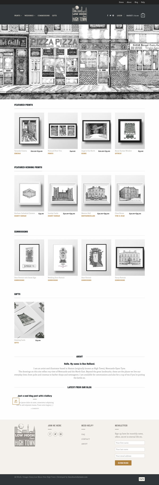

Ben Holland, an illustrator, wanted to change e-commerce platform and develop a new site to showcase his growing portfolio of work on WordPress.
First, we decided the brand's focus, then designed a new logo to incorporate some of Ben's work.
The launch of the website was a great success. Online sales went through the roof and expanded Ben's presence in the region.